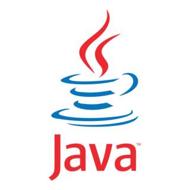
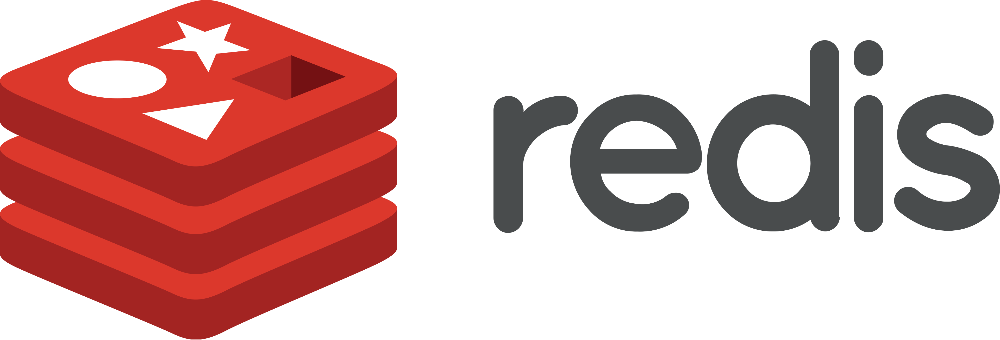
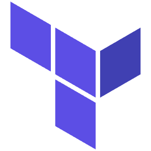

Spring Boot ActuatorSpring Cloud Data FlowSpring Batch JobsSpring Boot 3 Microservices
Spring Boot ActuatorSpring Cloud Data FlowSpring Batch JobsSpring Boot 3 Microservices
Java 21 Virtual ThreadsSpring Integration
Redis
Terraform + HelmLee varios archivos de entrada en una sola corrida, acumula importes por llave y escribe un archivo consolidado. En Java, Spring Batch trata los N archivos como un solo flujo de lectura y el agregado ocurre en el procesador antes de escribir.
SUMAR … A totales
ESCRIBIR cinta salida
MultiResourceItemReaderAggregatorProcessorFlatFileItemWriterProcesa registro por registro: valida cada campo y, si pasa, actualiza la base; si no, lo cuenta como rechazo y sigue con el siguiente. En Java cada lote se confirma en una sola transacción y los rechazos van a una bitácora sin detener el job.
SI válido → MODIFICAR registro DMSII
SINO → conteo de errores
ItemProcessor<In,Out>JpaRepository.save()@TransactionalOrdena los datos por la llave del reporte, detecta los cambios de nivel para imprimir subtotales y da formato a cada línea. En Java el formato vive en plantillas JasperReports y un escritor clasificador separa la salida regulatoria de la operativa.
WRITE REPORT GROUP
Cortes de control nivel 1-3
JasperReportsClassifierCompositeItemWriterStepExecutionListenerRecibe el archivo de un tercero en su propio formato, lo traduce a la estructura del banco y lo carga. En Java el feed llega por Kafka, Spring Integration hace el parseo y un adaptador ISO 20022 entrega el mensaje canónico.
Transformar formato propietario
Escribir a DMSII / cinta salida
Spring IntegrationKafkaItemReaderISO 20022 adaptersNo procesa datos: decide qué programa corre, en qué orden y qué hacer si uno falla. El WFL de Unisys se reemplaza por un flujo declarativo con pasos en paralelo, decisiones por código de salida y reintentos automáticos.
RUNPROGRAM P420
IF TASKVALUE ≠ 0 → manejo error
Spring Cloud Data FlowJobLauncher + FlowAirflow DAGLee los registros de todo el país y envía cada uno a la región que le corresponde según su código CSI. En Java un clasificador enruta cada registro y un paso particionado procesa cada región en paralelo.
CUANDO 04 → Monterrey
CUANDO 10 → Valle de México
ClassifierCompositeWriterPartitionedStepCsiRouter @BeanPipeline CI/CD
Golden-master tests AS-IS
Arquetipos 1+6 (Concentrador / Distribuidor)
Migración DMSII → PostgreSQL
Shadow mode (COBOL + Java en paralelo)
SLO definidos y monitoreados
AMEX · INTELAR · TBI migrados
Cintas eliminadas
Event-driven architecture activa
Mainframe Unisys retirado
Observabilidad completa
CNBV compliance verificado
BigDecimal con escala=2 y HALF_EVEN. Nunca double. Equivalencia ≥ 99.99% exigida por CNBV.